Syllabus
Explore fundamental software design security concepts when developing programming code
- confidentiality
- integrity
- availability
- authentication
- authorisation
- accountability
Learning Intention and Success Criteria
Learning Intention - Students will:
- Understand fundamental security concepts in software design, including confidentiality, integrity, availability, authentication, authorisation, and accountability.
- Apply these concepts when developing secure programming code using Python and Flask.
Success Criteria - Students can:
- Students will be able to explain key security concepts and how they relate to software development.
- Students will be able to implement these concepts in a Python (Flask) web application.
Content
Several fundamental concepts are crucial in secure software design for ensuring that applications are safe, reliable, and resilient against threats. Below, we explore these concepts and demonstrate how to implement them in a Flask web application.
Confidentiality
Definition:
Confidentiality ensures that sensitive information is accessible only to those authorised to view it. In web applications, this often involves encrypting data and securing communications.
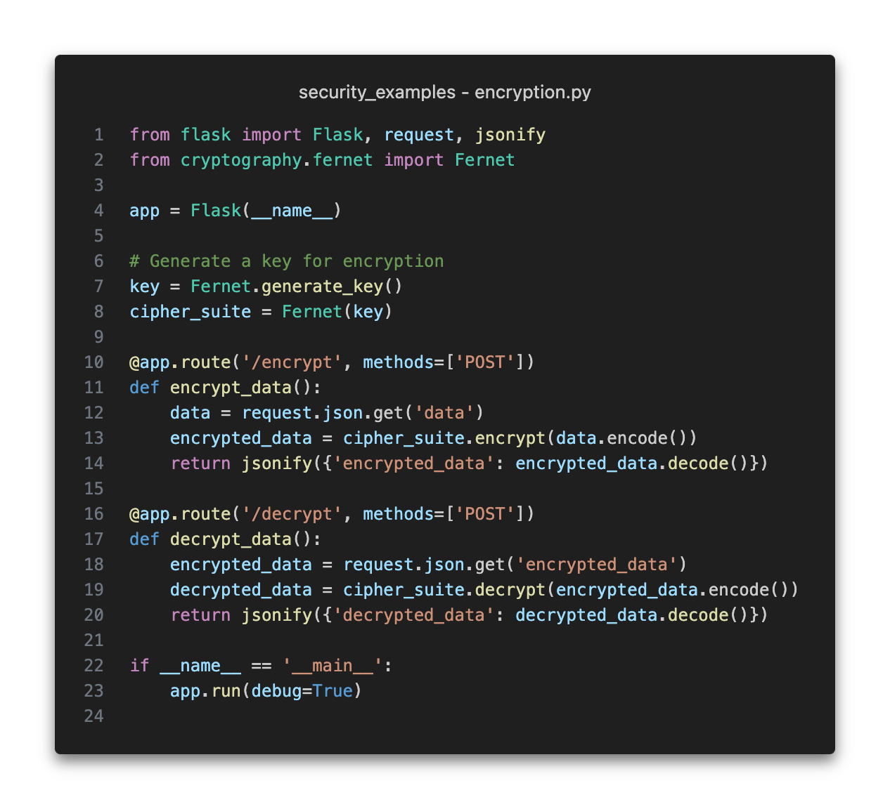
Explanation:
This example demonstrates ensuring confidentiality by encrypting data before storing or transmitting it. Flask handles the request and the cryptography library is used to encrypt and decrypt data.
Below is an example of an API request to encrypt and decrypt data.
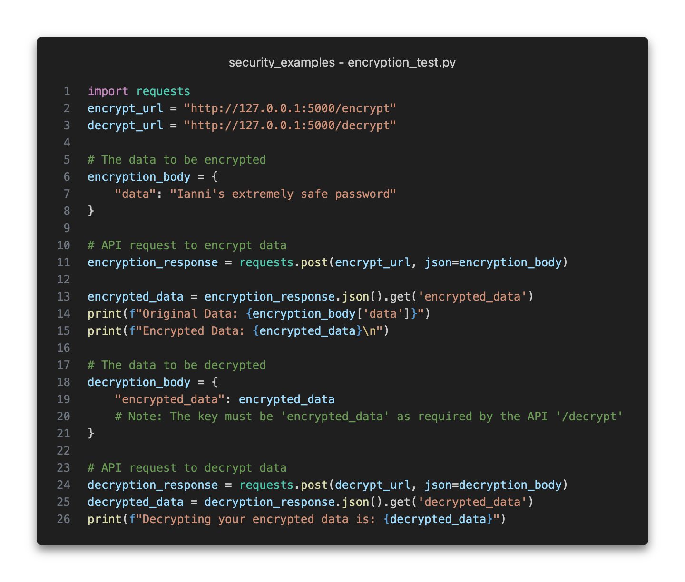
$ python3 encryption_test.py
Original Data: Ianni's extremely safe password
Encrypted Data: gAAAAABnFxc7HahGOnsH1tHh2_Od2Gxql2M3kf9v2hGv19PiJ4yLC8ROcdy2jIzT1QY1lWHiaMgwOOUKE899WmGskPiG6LlVKrxUpnbIiynAI5nAqsE281c=
Decrypting your encrypted data is: Ianni's extremely safe password
Integrity
Definition:
Integrity ensures that data is accurate and has not been tampered with. Flask applications can be implemented using hashing algorithms to verify data integrity.
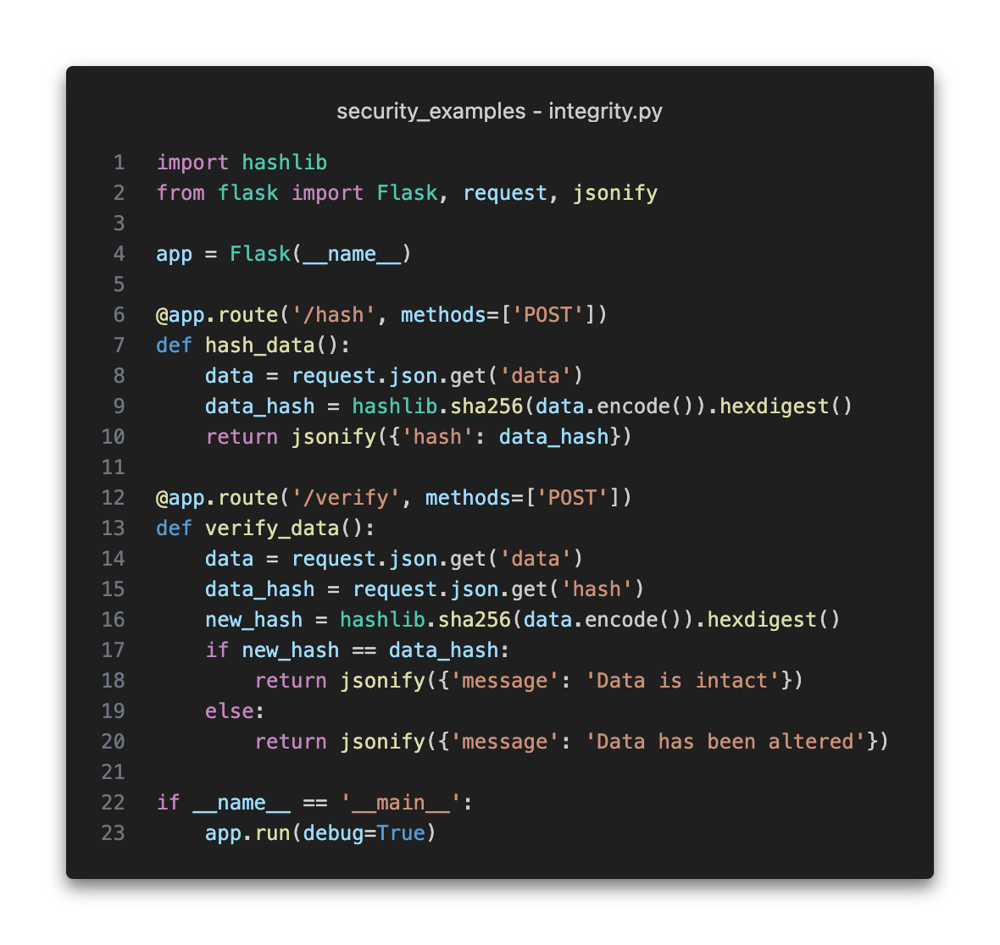
Explanation:
This example ensures data integrity by hashing data and verifying that the hash matches the original data. If the data is altered, the hash will not match, indicating a potential breach of integrity.
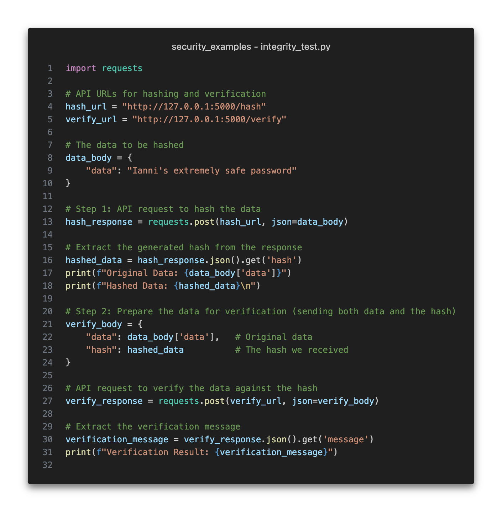
This example code sends a string to the /hash API endpoint, which generates a SHA-256 hash of the data. Then, it sends the original string and the hash (generated from the original string) to the /verify endpoint to check if the hash matches, confirming whether the data is intact or altered.
$ python3 integrity_test.py
Original Data: Ianni's extremely safe password
Hashed Data: 025a003603dd8d67442725058507fa5b859ec7d1d911fcfac291c2988fb71a59
Verification Result: Data is intact
Availability
Definition:
Availability ensures that systems and data are accessible to authorised users when needed. Flask can address this by implementing rate limiting to prevent denial-of-service (DoS) attacks.
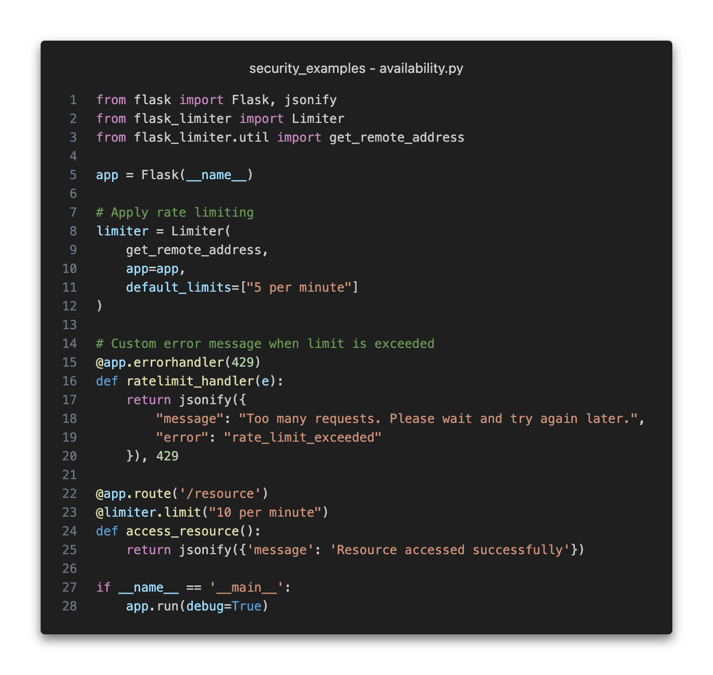
Explanation:
Rate limiting in this Flask application helps ensure availability by restricting the number of requests a user can make, protecting the application from being overwhelmed by excessive traffic.
The @app.errorhandler(429) decorator defines a custom error handler in Flask that specifies how to handle requests that trigger a 429 'Too Many Requests' error.
The code below makes 11 attempts to access the /resource route. The first 10 requests succeed, but the 11th fails because the API call limit is set to 10 per minute.
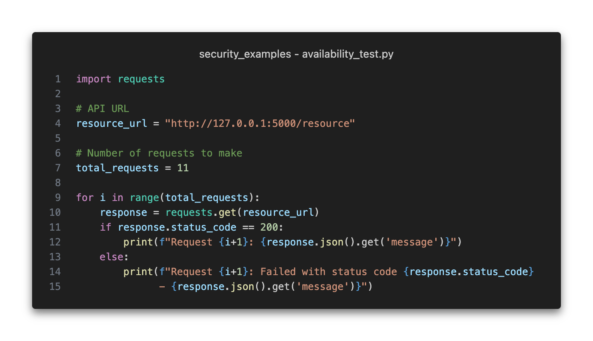
$ python3 availability_test.py
Request 1: Resource accessed successfully
Request 2: Resource accessed successfully
Request 3: Resource accessed successfully
Request 4: Resource accessed successfully
Request 5: Resource accessed successfully
Request 6: Resource accessed successfully
Request 7: Resource accessed successfully
Request 8: Resource accessed successfully
Request 9: Resource accessed successfully
Request 10: Resource accessed successfully
Request 11: Failed with status code 429 - Too many requests. Please wait and try again later.
Authentication
Definition:
Authentication is the process of verifying a user's identity. Flask can implement this using a simple username and password system.
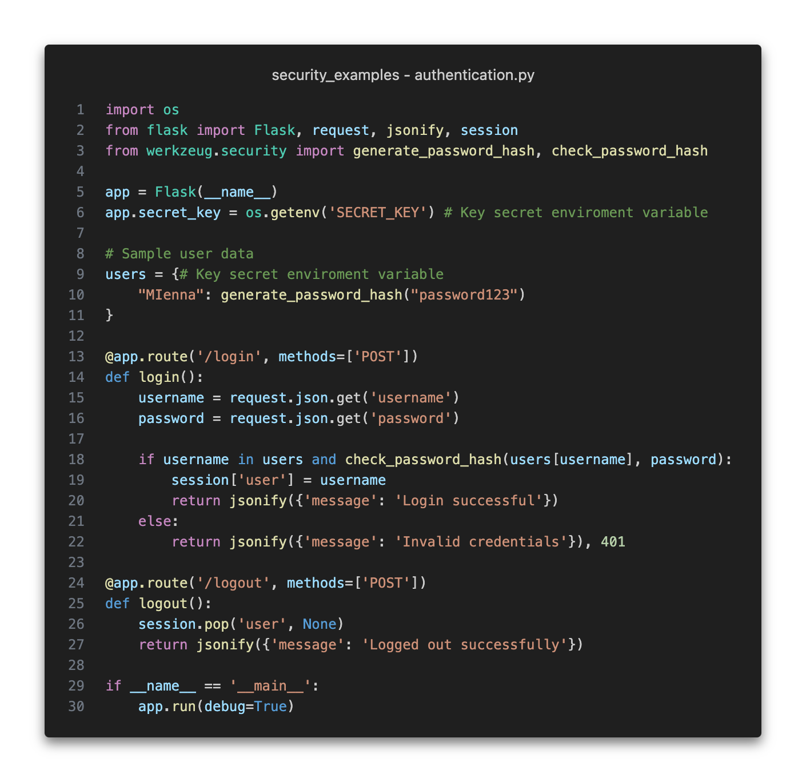
Explanation:
This example demonstrates user authentication using hashed passwords. The user's password is hashed for storage, and the login process checks the entered password against the stored hash.
The code below sends a login for a valid user (inside the user dictionary) as defined in authentication.py. The login API will authenticate the user if the password entered matches the one stored inside the dictionary. Otherwise, authentication is rejected, as seen in the 2nd API request for the invalid_login_body.
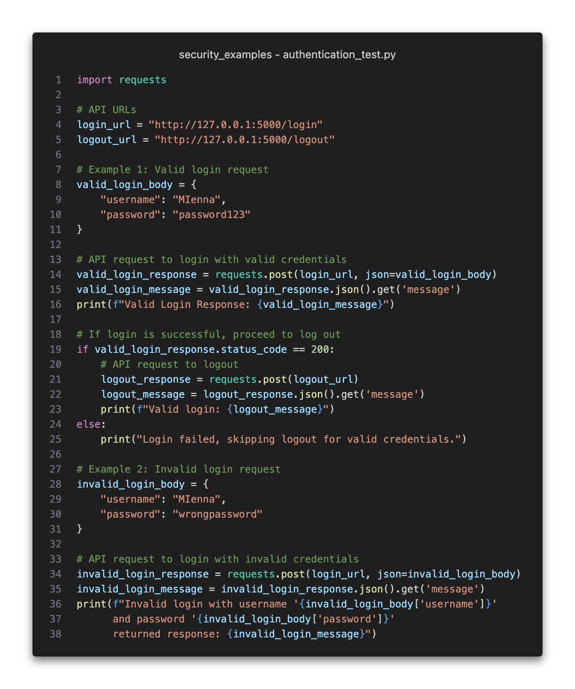
$ python3 authentication_test.py
Valid Login Response: Login successful
Valid login: Logged out successfully
Invalid login with username 'MIenna' and password 'wrongpassword' returned response: Invalid credentials
Authorisation
Definition:
Authorisation determines what an authenticated user is allowed to do. In Flask, this can be managed by defining roles and permissions.
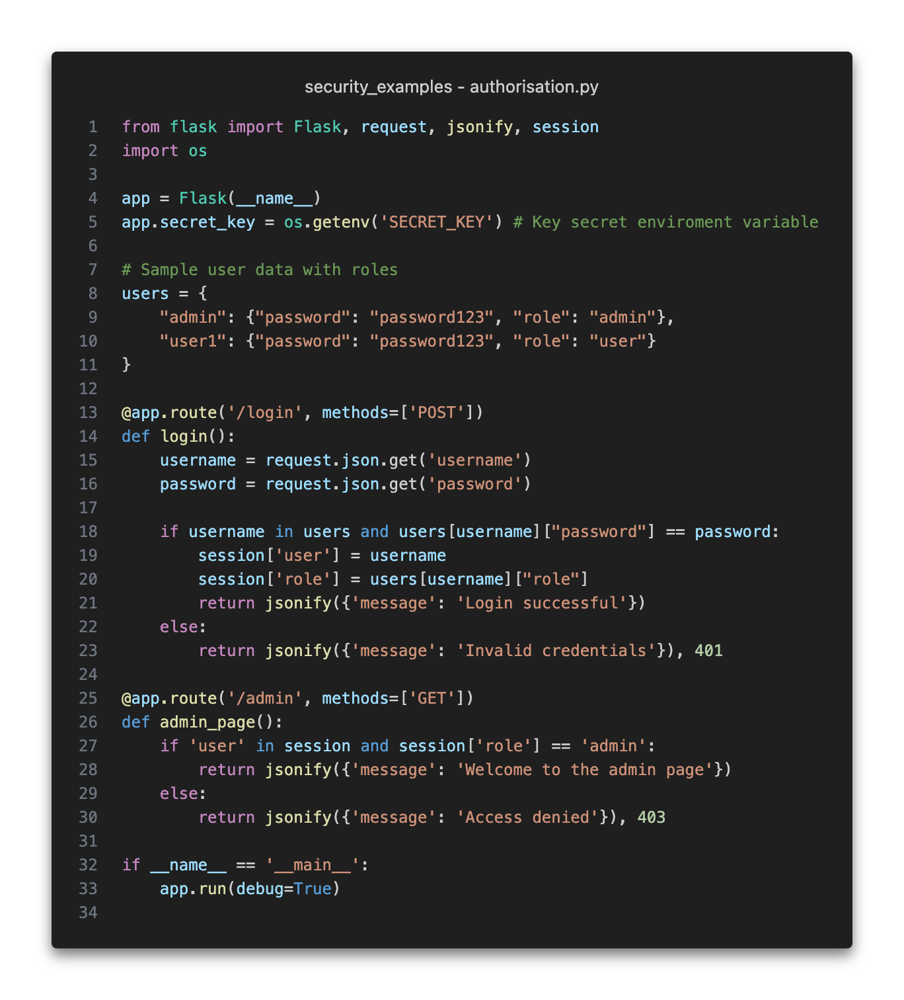
Explanation:
This example demonstrates authorisation by checking a user's role before allowing access to certain resources. Only users with the "admin" role can access the admin page.
Below is a code snippet that authenticates users based on their roles and authorizes access accordingly. Both users admin and user1 is successfully authenticated, but the /admin API checks for admin permissions and denies access to user1, as they do not have the required permissions.
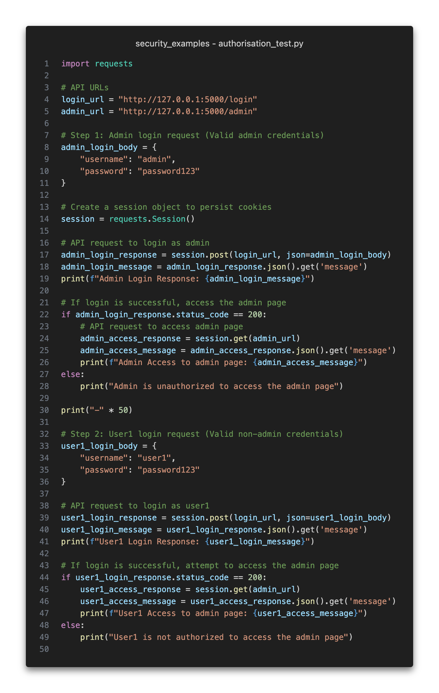
$ python3 authorisation_test.py
Admin Login Response: Login successful
Admin Access to admin page: Welcome to the admin page
--------------------------------------------------
User1 Login Response: Login successful
User1 Access to admin page: Access denied
Accountability
Definition:
Accountability ensures that actions can be traced back to the responsible user. This is often implemented through logging user actions.
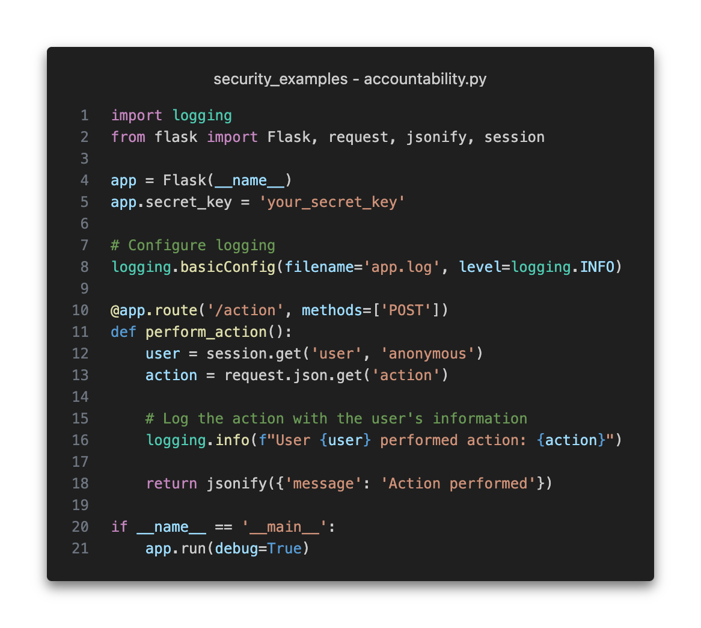
Explanation:
This example demonstrates accountability by logging user actions. Each action performed by a user is recorded in a log file, which can be reviewed to track user behaviour and ensure accountability.
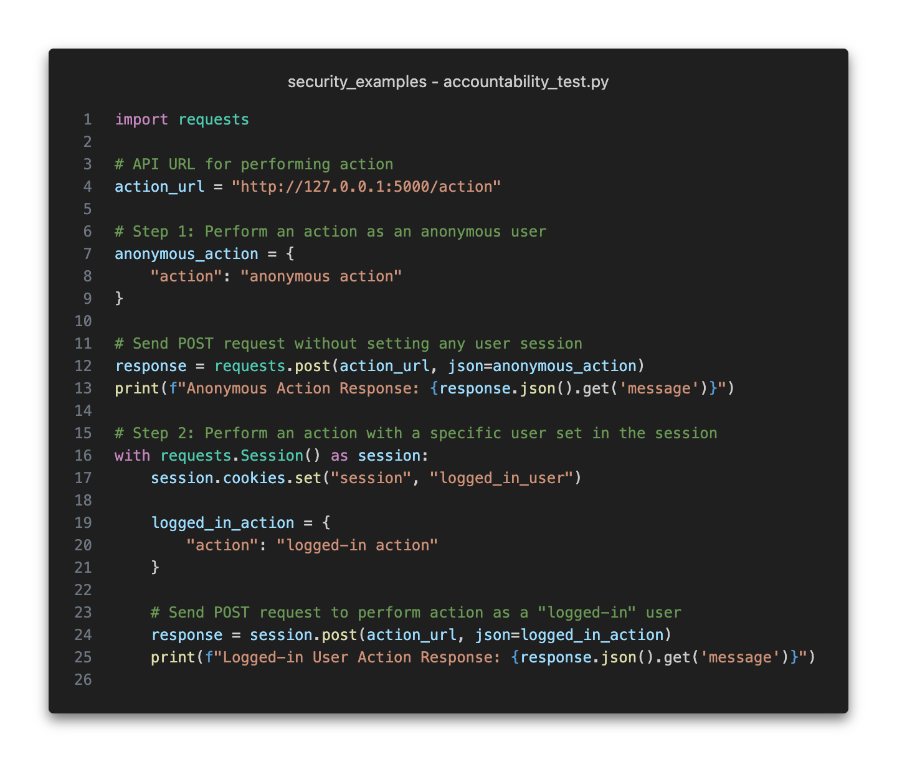
WARNING:werkzeug: * Debugger is active!
INFO:werkzeug: * Debugger PIN: 579-674-550
INFO:root:User anonymous performed action: anonymous action
INFO:werkzeug:127.0.0.1 - - [22/Oct/2024 15:51:45] "POST /action HTTP/1.1" 200 -
INFO:root:User anonymous performed action: logged-in action
INFO:werkzeug:127.0.0.1 - - [22/Oct/2024 15:51:45] "POST /action HTTP/1.1" 200 -
Activity
Practical
PowerPoint